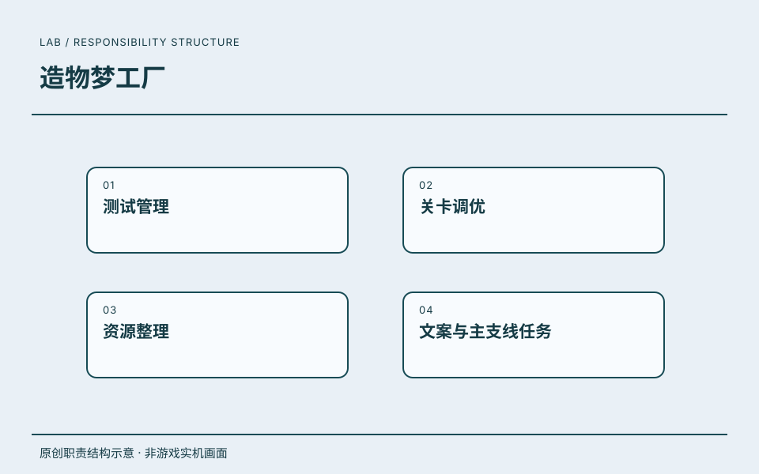

07 / 质量与内容实验室 · PROJECT 02
造物梦工厂.
参与主线与支线任务设计。游戏围绕玩偶收集、DIY 组装、生产上架和潮玩店经营展开。
任职角色沿用履历记录；具体贡献按项目资料区分，共同职责不逐项归为单个项目的独立成果。
从收集部件到经营潮玩店
玩家在盲盒机收集玩偶部件，自行组合设计，再把作品生产并摆上货架。收集决定可设计的组合，设计则为生产和销售提供商品。


一款玩偶怎样上架
- 收集与组合：获得部件后到 DIY 页面组合玩偶，所需部位齐全时可确认设计。
- 安排生产：选中生产台与玩偶开始制作，生产进度决定何时可以安排上架。
- 售卖与补货：成品摆进货架，玩家可吸引顾客加快售卖，也可启用补货助手接续陈列。
职责与资料依据
个人分工依据本人确认。任务案例根据历史主支线方案整理。配图为团队历史界面效果稿，画面中的数值用于示意界面状态。
把主线与支线任务放进店铺经营
我参与主线与支线任务设计。主线用人物和事件交代世界背景，支线给不同 NPC 留出成长空间。任务条件取自玩家已经在做的事，让剧情能接回接单、组装和经营。
- 主线可要求交材料、完成指定 NPC 订单、场景互动或达到经营目标。以指定订单为例，玩家在任务页核对要求和进度，再直接前往订单界面处理。
- 支线可让 NPC 提出造物要求，再引导玩家进入 DIY 组合。任务把外观或部件条件写成可执行的目标，玩家在常用界面完成创作。
- 人物信息随任务推进逐步出现。阶段回馈和来信承接玩家已完成的行动，也给下一次遇到同一个人留下线索。


MY WORK / DESIGN VALUE
这段任职的工作与价值
本项目参与记录已确认，以下是公司任职共同职责，未逐项确认本项目专属分工。以上为公司任职共同职责，未逐项确认在两款项目中的专属分工；不新增测试效率或质量提升数字。
- 01
QA 管理与关卡体验结合
- 具体工作
- 以 QA 经理 / 游戏策划身份承担测试管理和关卡调优，参与《纸片少女》《造物梦工厂》。
- 工作价值
- 形成质量检查与玩法体验相结合的工作基础，能够从问题定位进入设计调整。
- 02
内容与资源的策划工作
- 具体工作
- 承担资源整理、文案和主支线任务相关工作，兼顾内容与质量两个方向。
- 工作价值
- 说明从测试岗位向策划工作延伸的经历，以及对内容、资源和任务结构的关注。
职责依据本人履历与确认；原图补充设计证据，经营结果另行说明来源与口径。
查看完整公司经历 ↗
QA 经理 / 游戏策划
参与主线与支线任务设计。游戏围绕玩偶收集、DIY 组装、生产上架和潮玩店经营展开。
工作职责
- 01测试管理
- 02关卡调优
- 03资源整理
- 04文案与主支线任务
参与项目
项目记录
《造物梦工厂》列于这段任职经历中。
- 任职公司
- 北京冰狮科技有限公司
- 角色
- QA 经理 / 游戏策划
- 时间
- 2017.03—2018.01
任职、角色与职责依据本人履历及确认。图示是本站原创的职责结构表达。